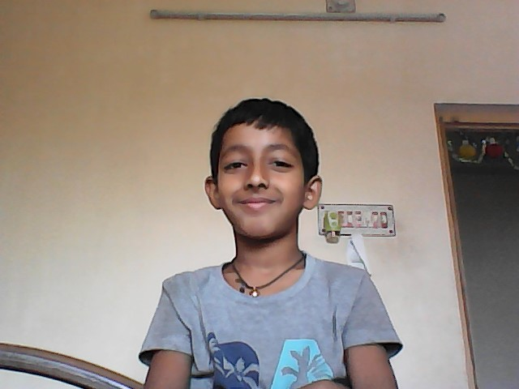
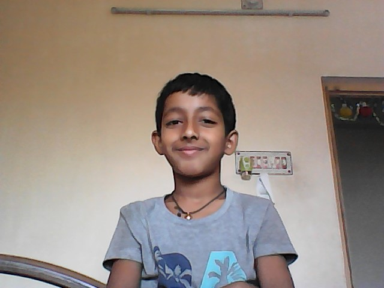

Coding is my hobby. when I was at the age of 4+ years, I saw a device. It was a laptop. I can only do as the folowos - such as searching trains,cars,and buildings.Then I grewup and at the age of 10 we buied a computer. I can do many things like youtube,going to websites and installing any exe file. Then I saw one unnone topic in my computer book that was Scratch. I researched and told to my father then I got it. It was Computer Programing. From there it starts.
Then I addmited on whitehat jr.com. My teacher's name is Vidya. She is very polite, intelligent person. Whenever I get time I do coding. I create apps and websites and also game. In Every second of my life I get Ideas and solve the codes in my mind. My future aims are - To create a website chatapp, to create our company's "Namita enterprise" own website, and the lastly to learn JAVA in future and create fantastic games.
See my pictures:-
 
